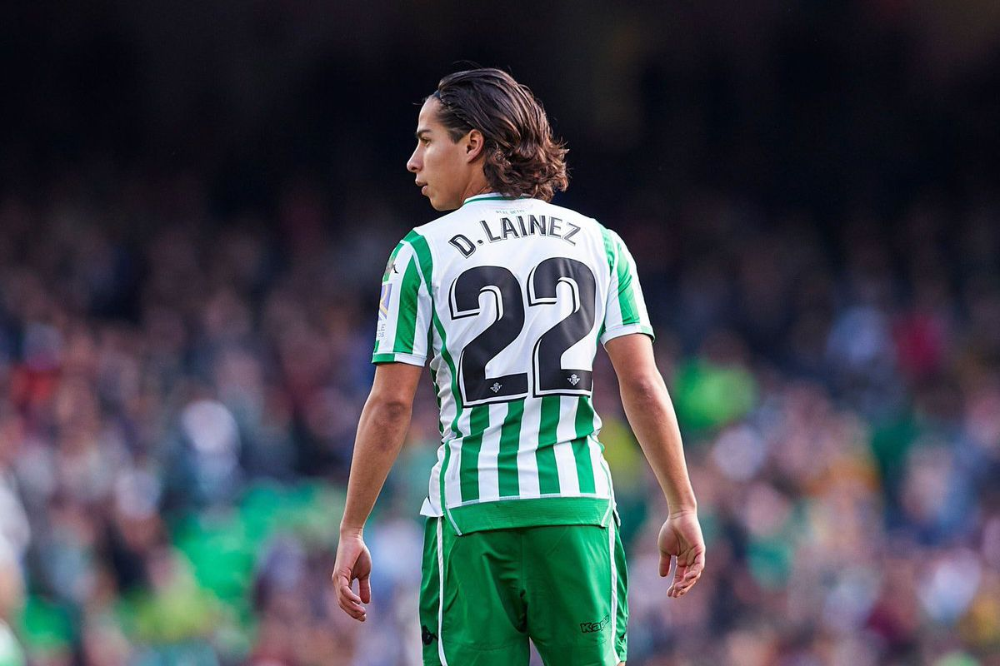
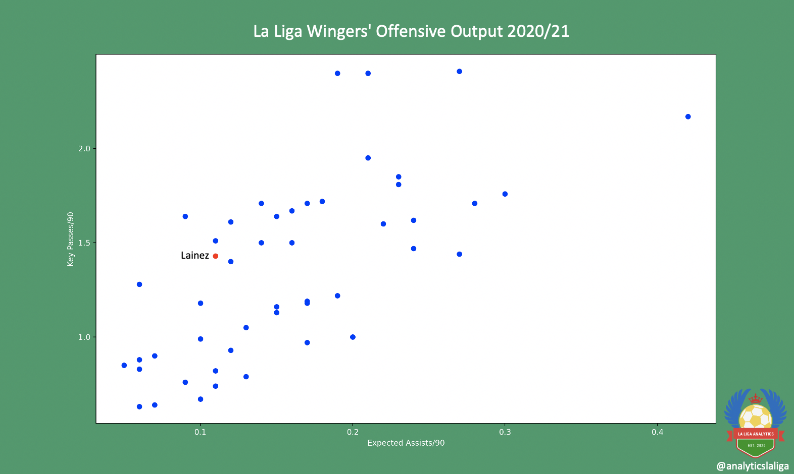
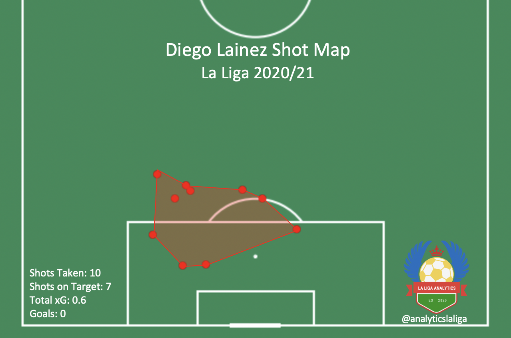
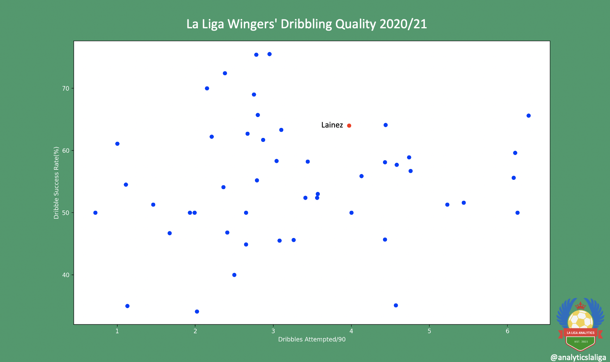
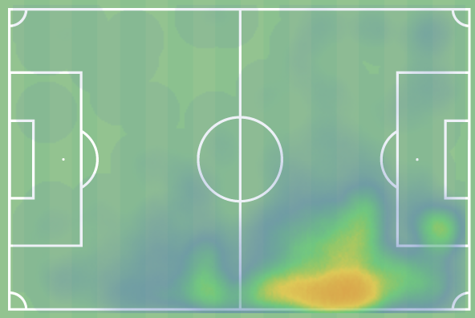

Diego Lainez Scouting Report by Charlie Tuley - April 8, 2021
|
ctuley@umich.edu

Diego Lainez
Club: Real Betis
Nationality: Mexico
Position: Winger
Squad Number: 20
Date of Birth (Age): June, 9, 2000 (20)
Dominant Foot: Left
Height: 186cm, 5’5’’
Market Value (via Transfermarkt): €7.02M
Contract Expires: June 30, 2024
All video clips are from Wyscout.com
Background
Born in Villahermosa, Mexico in 2000, Diego Lainez joined Liga MX side Club América’s academy in 2012. He spent five years playing for América’s youth side before being promoted to the first team in July of 2017. He’d go on to play for América for a year and a half, making 51 appearances for the club and scoring five goals in the process. In January of 2019, Lainez was transferred to La Liga side Real Betis for €13 million. He has since gone on to also make 51 appearances for Los Beticos, and has only scored two goals for the club (one of which made Lainez the youngest Mexican to score in the UEFA Europa League).
Lainez has also gotten his fair share of play time with the Mexican national team. While he worked his way through the Under-17, Under-20, and Under-21 teams during his youth career, he was first capped by the national team in September of 2018. Since then, he’s made seven appearances for El Tri, all in international friendly matches.
Lainez typically plays as a winger in Real Betis’ favored 4-2-3-1 formation. He has experience playing on both the left and right sides, but this season manager Manuel Pellegrini has favored him on the right, allowing him to cut inside on his dominant left foot to put in crosses or shoot. He’s made 17 appearances this season, playing 851 minutes, and while he started the season in a reduced role, he’s begun to work himself into Real Betis’ starting squad a bit more recently.
Defense
Defensively, Lainez is quite good. His strongest attribute when defending is his discipline, and he followers Real Betis’ pressing scheme very well. He runs hard to pressure his opponents upfield, but all of his pressing is done with a purpose in coordination with his teammates. He isn’t just running around aimlessly wasting his energy.
He very rarely puts in challenges or tackles, and if he does get close to an opponent he’ll try and jockey them off the ball, using his small frame to put them off-balance. Additionally, Lainez’ defensive discipline and decision-making often puts him in good positions to intercept opposition passes. He ranks very highly amongst wingers in passes intercepted per 90 minutes played, with 2.76 (all statistics are from Wyscout.com, and cover the 2020/2021 La Liga season as well as the Copa del Rey).
Lainez tracks back well, as wingers are asked to do in Pellegrini’s system. While he most often is involved in Real Betis’ defensive efforts, Lainez is also comfortable being the sole outlet for the team, and sometimes will be the only player left at midfield when Betis are defending in their own defensive third. This often happens on defensive corner kicks, as he isn’t much use defending corners at 5’5’’, and his pace allows him to be an easy outlet to get onto any clearance a Real Betis player may make.
Passing
Lainez’ play style on the wing is more distribution-based than focusing on creating chances for himself. He is comfortable playing short passes with both feet, but when it comes to more difficult passes and crosses he vastly prefers using his left foot. His first look, whenever picking the ball up on the wing, is to get into a good position to put the ball into the penalty area, where he can find ball-winners like Borja Iglesias, Nabil Fekir, and Loren Morón. When playing on the right wing (where he has played for most of this season), his preferred method of crossing is to cut back onto his left foot and deliver an inswinging ball to the far side of the six-yard box, where one of his teammates is usually making a back-post run. If he can’t get the ball onto his left foot, Lainez will most likely make a run towards the goal line, where he will play a low (typically on the ground) pass across the face of the goal. Lainez attempts 2.45 crosses each match, completing them at a 25.5% rate, a very high return for a winger of his age and experience. Below are examples of Lainez crossing with each of his feet, both from Real Betis’ match against Cadiz from this season.
If Lainez can’t get himself into a position where he can create a chance for his teammates, he’ll usually take a more conservative approach, often just recycling possession through his central midfielders or supporting fullback. This could either be seen as a mature decision, as to not force something into a turnover, or a lack of desire to take risks. At this point, I’m leaning towards the former, as Lainez often shows his creative and risk-taking side whenever he gets on the ball in the final third.

However, the lack of output from passes other than crosses does drop Lainez’ stock a bit. He often goes missing in matches against teams that are adept at defending crosses, and he would massively benefit from adding more types of passes (or other forms of shot creation) to his repertoire. From what I’ve watched of him, I think he could be incredibly dangerous if he were to start cutting inside at the top of the penalty area, then playing lofted balls over the opposition defensive line. He certainly has the skill to pull this off, and it would do him wonders to become a much more versatile playmaker.
Shooting
Finishing is by far the area where Lainez is most lacking. In his (almost) two and a half seasons with Real Betis, he’s only managed to score two goals (from 2.53 expected goals). Lainez’ issues with shooting mainly stem from his inability to get into good shooting positions or create quality chances for himself. Just about the only way that Lainez gets himself into shooting positions is to cut in from the right wing and shoot with his left foot near the top of the penalty area (think prime Arjen Robben, with less end product). Below is a clip of a typical Diego Lainez shot (usually they stem from him dribbling in from farther on the wing than this clip), and below that is the Mexican international’s shot map from this season. It’s astounding how similarly-positioned all of his shots are.

As Lainez only really shoots from one small area (and has seen little success), he is relatively easy to defend. Most of the shots he takes are either straight at the goalkeeper or are blocked by defenders, like what was seen in the clip above. His shooting is quite predictable, and he won’t be scoring much anytime soon if he doesn’t either improve upon what he currently does or start trying to take shots from other areas on the pitch.
I’ll discuss more on this in the next section, but it isn’t part of Lainez’ style to try and get in behind his opposition’s defense and make runs at goal. When he does end up in a breakaway situation or having been played in behind, he will most likely be in a very wide area, and he will continue down the wing in order to put in a cross as opposed to dribbling at the goal to set himself up for a shot. He would benefit from a bit of ruthlessness, a desire to want to get goals himself, to be more selfish. At this point, his decision making is holding him back from being a true goalscorer.
However, on the off-chance that he does get the ball in a good shooting position, he usually finds the back of the net. His latest goal (clipped below), scored back in late 2020 for the Mexican National Team, was scored with an excellent finish on the volley (with some slightly questionable defending from the Algerian National Team as well). This just proves that Lainez isn’t a poor finisher, just that he’s not getting himself in quality shooting positions. He’ll only get so far just taking low-probability shots from outside the penalty area.
Dribbling/Off-ball
It’s always been said that Lainez’ dribbling is his biggest asset, and rightfully so. His ball-handling skills are very high for such a young player, he’s already cementing himself as one of the best ball carriers in La Liga. He is one of the very few players who attempts more than four dribbles each match, as well as completing them at higher than 60% rate. He almost exclusively dribbles with his left foot, and the ball sticks to it like glue. His close control is admirable, and an example can be seen below.

After watching Lainez for quite some time, I found myself drawing unexpected comparisons to Manchester United’s Marcus Rashford. Both Lainez and Rashford try their hardest to never have their back to goal when on the ball, and if they end up in a position where this isn’t possible, they’ll take the ball into space (often into inopportune areas) so that they can orient themselves towards the goal. Both players have little skill (or in Lainez’ case, the body frame necessary) for holdup play, a reason that neither are a great fit to play in a striker role. Finally, both players like to pick up the ball from deep positions on the wing and dribble at their opponents with pace, as opposed to having played balls over the top of the opposition back line for them to run onto. For this reason, Lainez is very good at maintaining an onside position, he prefers to use his speed to dribble past opponents rather than sprint past them and then receive the ball. Since he prefers to take defenders on, Lainez is fouled very often. On average, he draws 2.22 fouls each match, one of the highest rates in La Liga. His small frame helps in this sense; it’s easy to draw fouls when any touch from a larger defender sends Lainez tumbling.
However, unlike Rashford, the majority of Lainez’ ball carries aren’t towards the goal. As I’ve stated often, his main objective is to get the ball into the penalty area for his teammates, and the easiest way for him to do this is through crossing. Therefore, most of Lainez’ carries take him into the areas shown in the heatmap below. He has very little penalty box presence whatsoever, aside from carrying the ball into the penalty area to create an easier chance for one of his teammates.

Verdict
Diego Lainez has the talent and mentality to become an elite player, but he still has a long way to go. He’s still very raw, and he needs work on consistently making an impact in each match he plays. Also, I believe that people need to adjust their expectations of Lainez- as long as he stays at Real Betis (and continues to play in their current system), he won’t undergo any drastic changes as a player. We’ll hopefully see improvements as he becomes more mature, and I expect him to become a high-level creative winger given what I’ve, not someone who will be putting the ball in the back of the net himself.
Real Betis is a great team for Lainez quality-wise. At his best, I think that Lainez could become a key player in a side that consistently qualifies for the Europa League, and with the track that Real Betis are currently on, they could easily be that team. I expect Lainez will stay with Los Beticos for the next couple of years, they’d have no reason to sell him anytime soon. Though he does fit Real Betis’ system very well, I don’t think that Lainez exclusively works in this type of team; I think that he’d fit in in just about any counterattacking side that allows its wingers to play a slightly deeper role.
Hopefully Manuel Pellegrini continues within his current trend of giving Lainez consistent playing time, as it’s the only way that he’ll improve. All of the tools are there for Lainez to succeed- a great manager, a system that benefits him, and quality players in his position that he can learn from and compete with- all he has to do is reach out and take it.